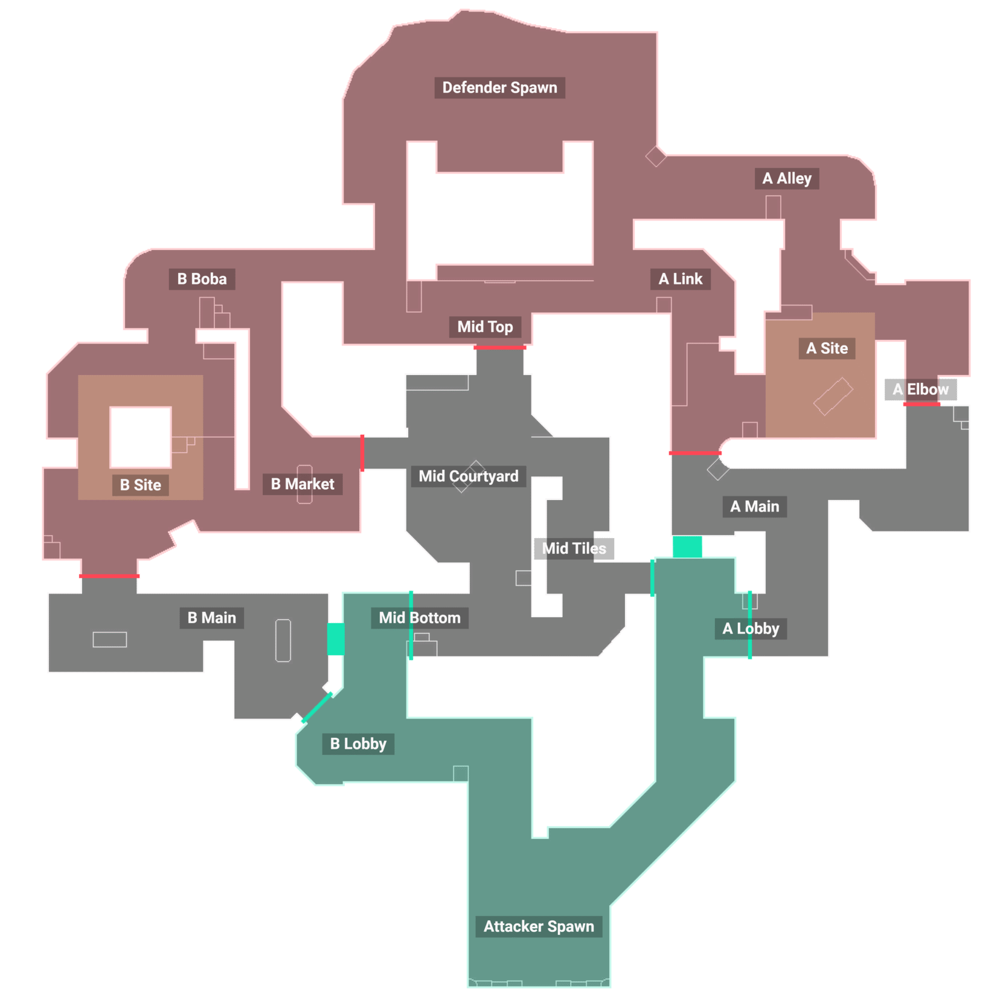
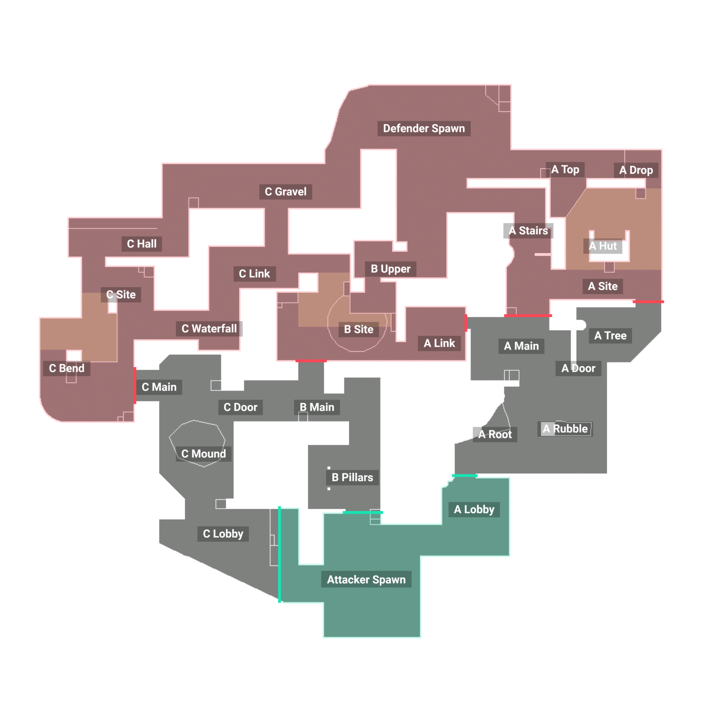
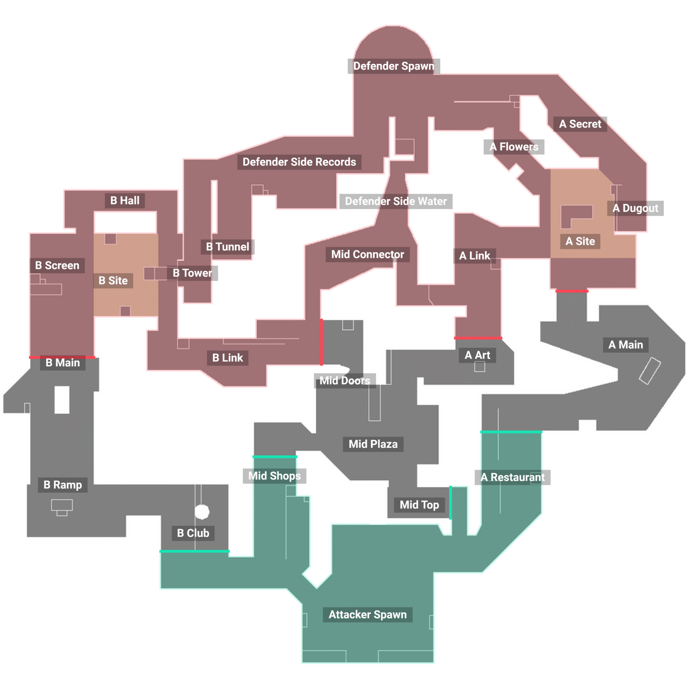
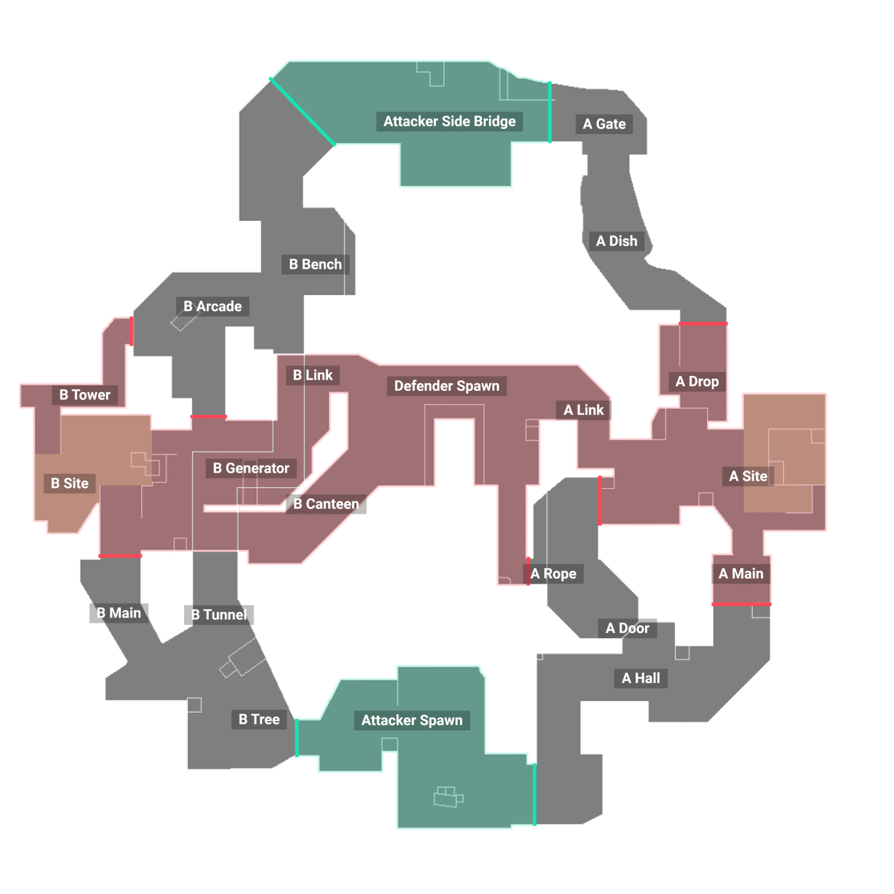
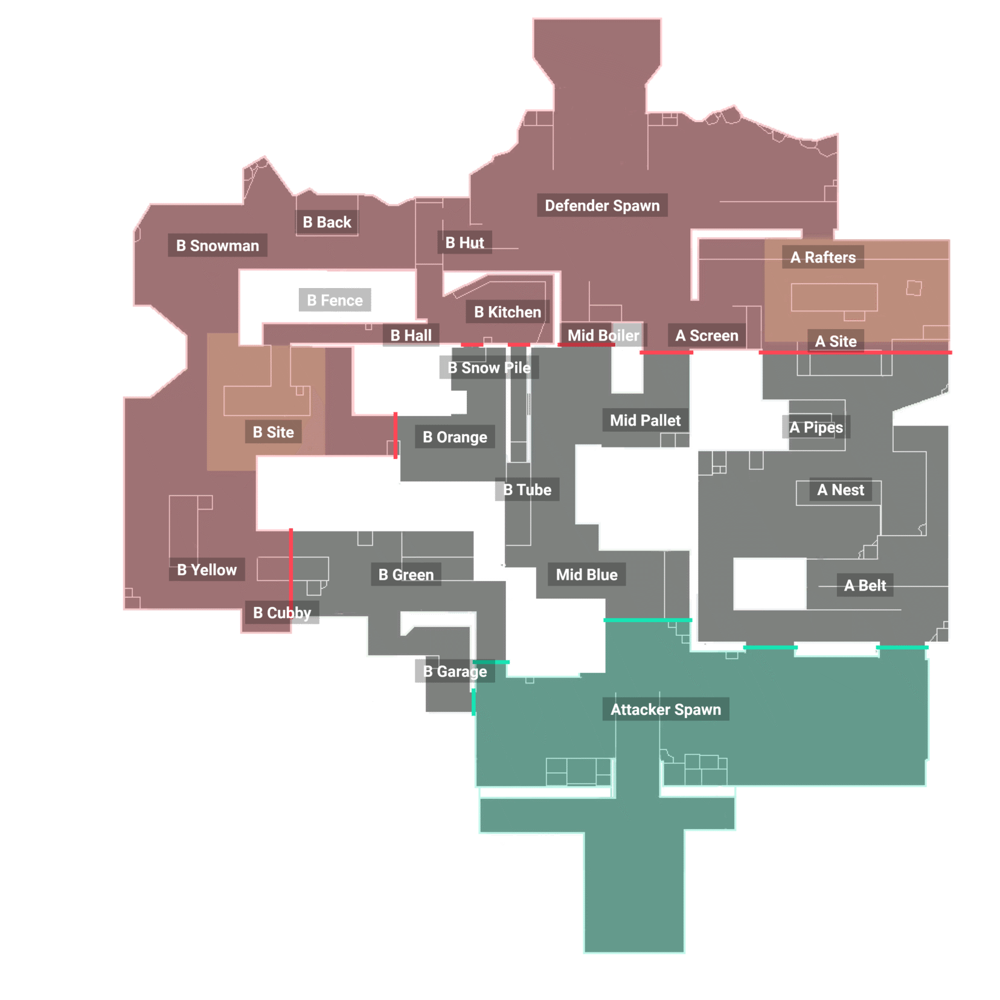
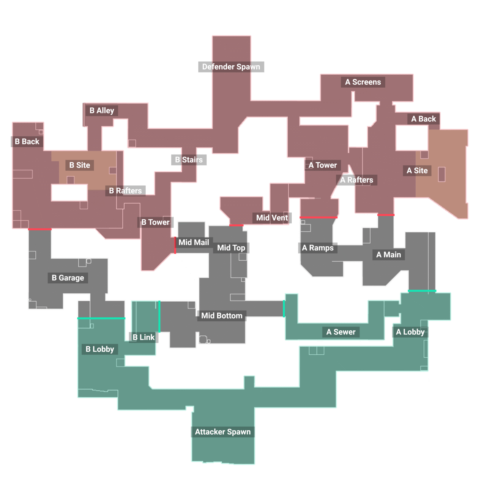
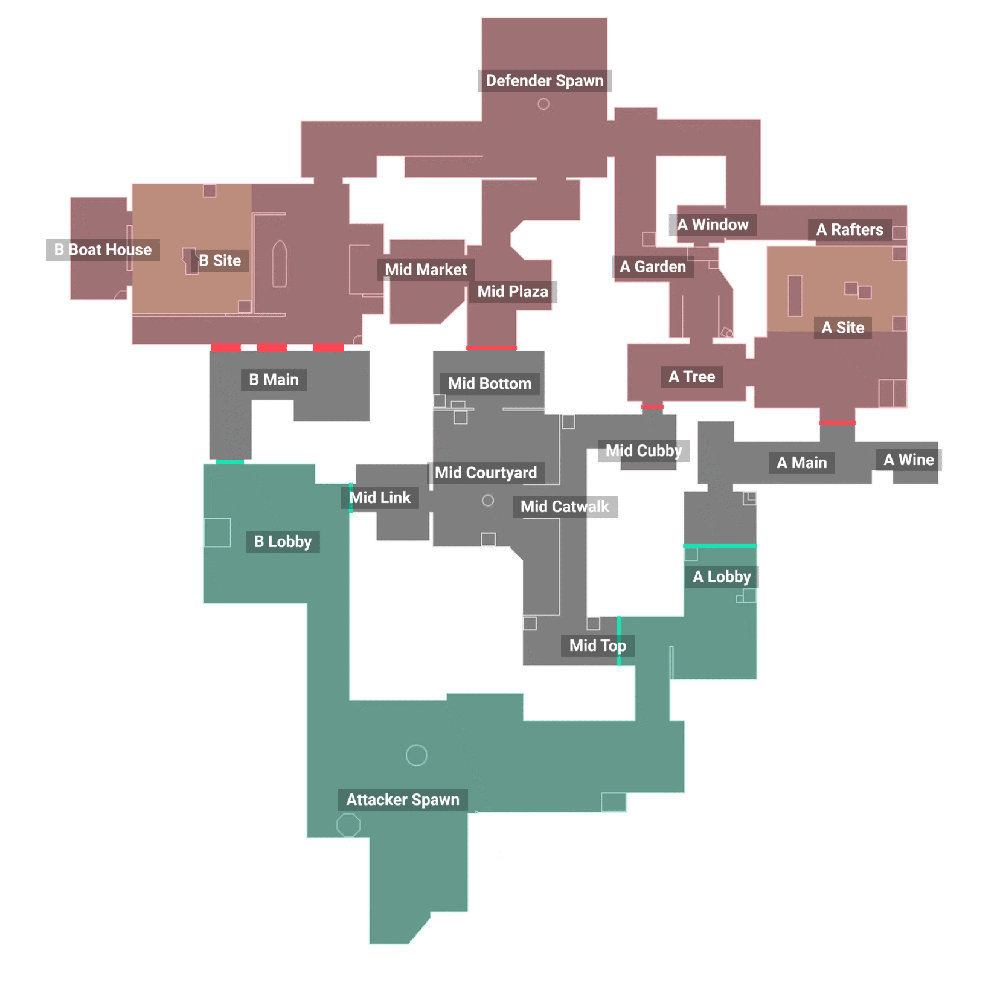
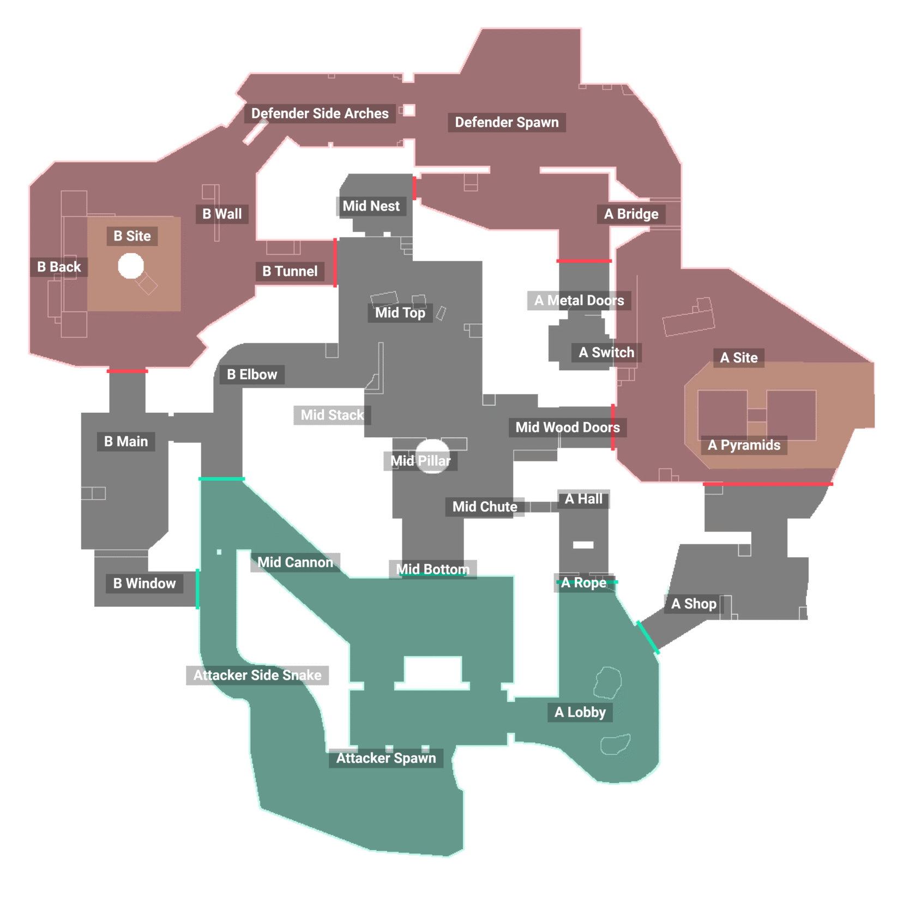

Sunset
Sunset est une carte de Valorant qui se déroule dans une ville futuriste avec deux sites de bombe.

Lotus
Lotus est une carte de Valorant qui se déroule dans une ville futuriste avec deux sites de bombe.

Pearl
Pearl est une carte de Valorant qui se déroule dans une ville futuriste avec deux sites de bombe.

Fracture
Fracture est une carte de Valorant qui se déroule dans une ville futuriste avec deux sites de bombe.

Icebox
Icebox est une carte de Valorant qui se déroule dans une ville futuriste avec deux sites de bombe.

Bind
Bind est une carte de Valorant qui se déroule dans une ville futuriste avec deux sites de bombe.

Haven
Haven est une carte de Valorant avec trois sites de bombe, offrant une variété de stratégies de jeu.

Split
Split est une carte de Valorant qui se déroule dans une ville futuriste avec deux sites de bombe.

Ascent
Ascent est une carte de Valorant avec trois sites de bombe, offrant une variété de stratégies de jeu.

Breeze
Breeze est une carte de Valorant avec trois sites de bombe, offrant une variété de stratégies de jeu.